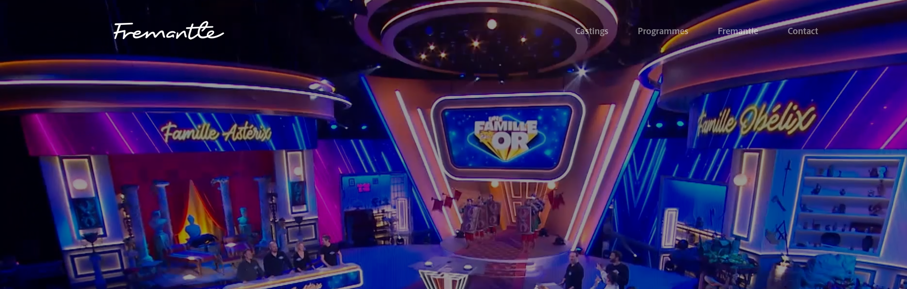
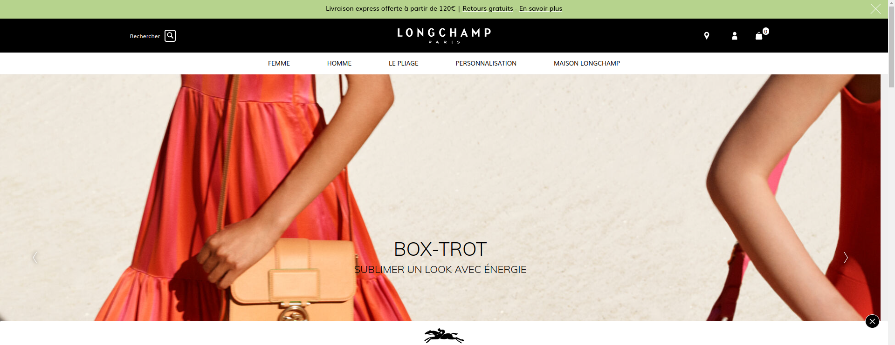
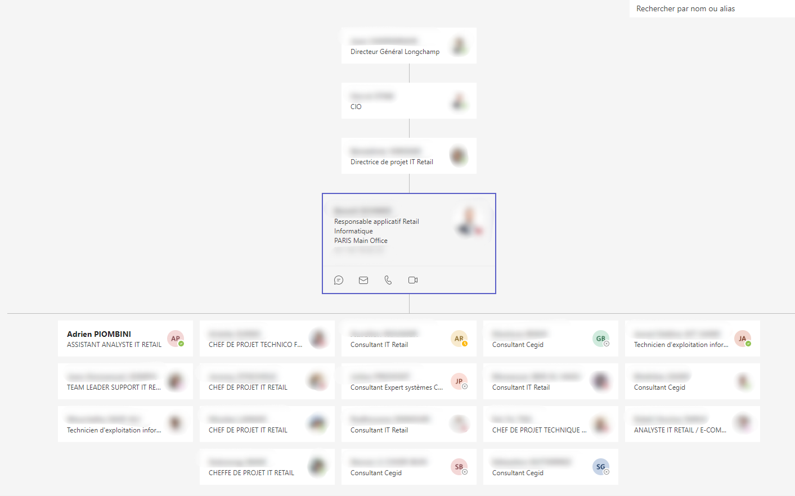

Mon Profil
A propos de moi
Je m’appelle Adrien, je suis actuellement étudiant à l'école IRIS de Paris, en deuxième année de BTS SIO option SLAM (Solution Logiciels et Application Métiers) Depuis mon plus jeune âge, j’ai toujours été attiré par l’informatique et les nouvelles technologies. C’est tout naturellement que je me suis tourné vers ces études, faisant des études similaires et des recherches par passion personnelle.
Master STAPS
A la suite de mon Master en Sciences et Techniques des Activités Sportives en Sport et Santé j'ai décidé de me reconvertir dans le monde de l'informatique

BTS SIO
SISR :
L’acronyme SISR signifie « Solutions d’infrastructure, systèmes et réseaux ». Voici des précisions sur cette formation et ses débouchés. L’option SISR est destinée aux étudiants qui s’orientent vers les métiers liés à la conception et la maintenance d’infrastructures réseaux. Assurer la sécurité, la maintenance et l’installation des réseaux et des équipements informatiques font partie des principales missions des futurs administrateurs, techniciens ou pilotes d’exploitation. Des cours plus généraux viendront compléter la formation et apporter des compétences plus généralistes, permettant ainsi aux diplômés d’être opérationnels dans n’importe quelle entreprise.
SLAM :
Le signe SLAM signifie «Solutions Logicielles et Applications Métier». Voici quelques indications sur cette seconde option du BTS SIO, ainsi des précisions sur cette formation et ses débouchés. L’option SLAM est destinée aux étudiants qui s’orientent vers les métiers liés à la conception et la maintenance de programmes applicatifs. Grâce à des cours spécifiques, les diplômés seront capables de gérer un parc informatique ou d’administrer un réseau au sein d’une entreprise. Ils pourront également gérer l’intégration, la sécurisation et la configuration des serveurs, mais aussi des postes clients et des équipements d’interconnexion.
Mon parcours professionnel
Première année de BTS :
Technicien Support Exploitation chez FremantleMediaFrance

Au sein de la societe Fremantle, j'ai rejoint l'équipe informatique support dans laquel je réalisé divers missions accès notamment sur des compétences réseaux et serveurs
- Gestion des utilisateurs via Active Directory
- Gestion du parc informatique via SCCM et JAM
- Mise a jour du réseaux et assistance informatique au sein de utilisateurs
- Rédaction de procédure
- Communication et collaboration avec les autres membres de la société
Deuxième année de BTS :
Analyste IT Retail chez longchamp

J'ai décidé de rejoindre l'équipe CEGID au sein de la société Longchamp pour réalisé ma deuxième année de BTS afin d'avoir des projets professionnel en corrélation avec ma formation SLAM
Mon équipe :

Mes tâches au sein de l'IT retail :
- Automatisation des corresctions de FFO via du PL/SQL
- Gestion et suivi d'un projet à forte valeur ajoutés de manière autonome
- Collaboration et travail en pluridisciplinarité avec les autres membres de l'équipe projet et support
- Utilisation professionnelle des outils SQLServer et CEGID
Après le BTS ?
Poursuite d'étude ?
A la suite de mon Brevet Technique Supérieur, je souhaites poursuivre mes études afin de parfaire mes compétences dans le monde du développement. Pour cela j'ai opter pour rejoindre un bachelor toujours en alternance afin de confronter mes compétences directement au monde professionnel tout en développant mon réseau et mon expérience.
Carrière professionnel ?
Cela reste encore un peu vague, beaucoup de domaine sont très intéressant. Parimi eux la Data et la Blockchain sont pour l'instant les sujets qui m'inspirent le plus !
Mes Compétences
Curriculum Vitae
Vous trouverez mon Curriculum Vitae en cliquant ici